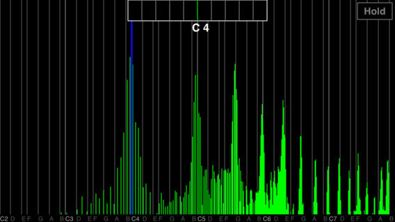

マイクから入力した音声のスペクトルをリアルタイムに表示するアプリです。横軸が音階になっています。
【特徴】
・マイクから入力した音声のスペクトルをリアルタイムに表示
・横軸を音階で表示
・C2～B7までの6オクターブを表示
・画面の横回転に対応
・基本周波数（ピッチ）を1cent単位で解析して表示(数centの誤差範囲)
・画面右上のホールドボタンをタップすることでホールドが可能
【使い方】
マイクから音声を入力してください。スペクトルがリアルタイムに表示されます。横回転に対応しています。
【基本周波数(ピッチ)について】
基本周波数が推定される場合、その音階の位置に青色の縦線が表示されます。
また、画面の上部に音階名が表示されます。
なお、音声に複数の楽器や和音を含む場合は、正しく解析できません。
【ダウンロード】
AppStoreで見る